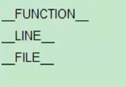
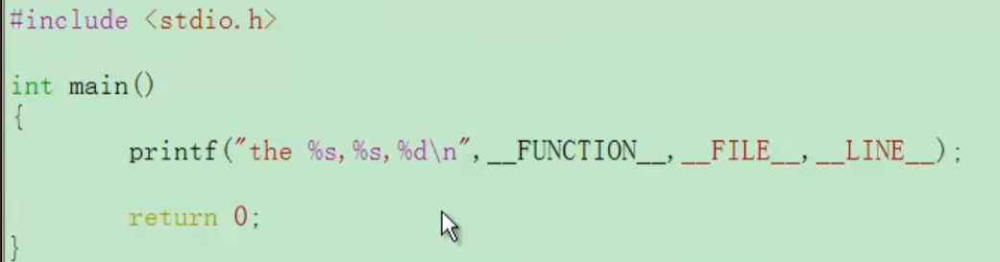
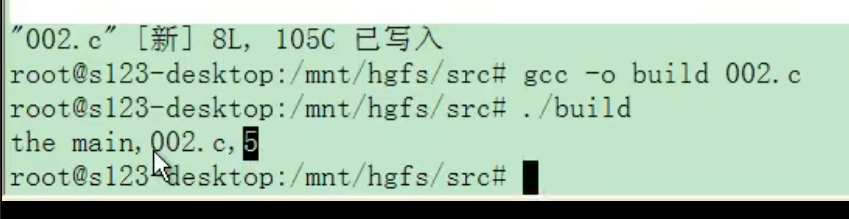
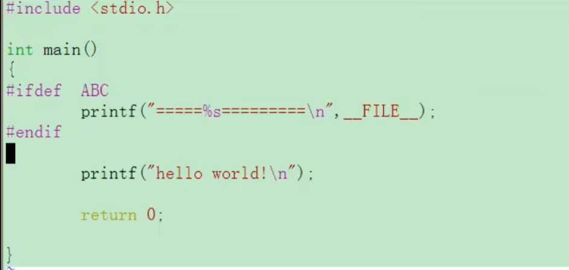
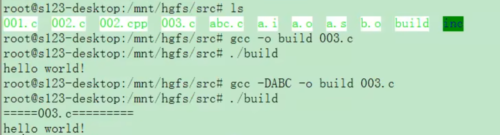

嵌入式c语言笔记
GCC
GCC概述
最初的全名是：GNU C Compiler
随着支持的语言越来越多，名称变成了GNU Compiler Collection
作用是翻译
是根据文件后缀名来调用翻译组织的，所以源文件记得后缀要是.c
例子：
gcc -o 输出文件名 输入文件名
gcc -v -o 输出文件名 输入文件名 （显示详细信息，比如调用了什么）
（Linux系统中0值代表成功，所有非零值代表失败）
C语言编译过程介绍
编译：/usr/lib/gcc/i486-linux-gnu/4.4.3（版本号）/cc1 用的时候一般是【gcc -S】 把.c文件变成.s文件 就是编译
汇编：as -o yst.o yst.s 用的时候一般是【gcc -c】—— 包括了编译和汇编
链接：/usr/lib/gcc/i486-linux-gnu/4.4.3（版本号）/collect2 用的时候一般是【gcc -o】——包括了编译、汇编和链接
预处理：cpp -o a.i oo1.c 记住【gcc -E】就行 实际上就是一个替换的过程 把#define之类的东西替换了
C语言常见错误举例
预处理错误
include “name” 还会在当前目录找
include < > 只会在系统目录找
not find no such file
解决方法：gcc -I跟查找头文件的目录
编译错误
语法错误 ; {}
链接错误
就是 原材料不够（undefine） 比如说没声明某个函数fun是怎么实现的 只写了void fun (void); 没有大括号
解决方法：寻找标签是否实现了、 链接时是否加入一起链接
或者 原材料多了（multiple define） 比如有两个同名函数，也就是多次实现了标签（在源代码文件里面实现了一次，又在另一个补充文件里面实现了一次）
解决方法：只保留一个标签的实现
预处理的使用
#define 宏名 宏体 好习惯：加括号
语法错误举例：
#define ABC 5+3
printf(“the number is %d\n”, ABC/5); 5+3/5 会有运算顺序问题
所以好习惯：加括号 #define ABC (5+3)
#define 宏函数
比如 #define ABC(x) (5+(x))
预定义宏:三种

使用方法:

结果：函数名、文件名、行数

条件预处理的使用
用于调试版本和发行版本的区分
比如源代码，在调试的时候要打印信息，说明代码正在调试，但是发行的时候并不想显示，可以进行如下操作：

如果ABC定义了，那么就会显示；如果没有定义，就不显示。
升级一下，为了显示调试信息的时候不修改源代码，可以使用 gcc -D宏名 的命令 等效于#define了一个ABC：

宏展开下的#、
C语言常用关键字及运算符
总共32个关键字
sizeof：查看对象的内存空间容量
return：返回
硬件操作的最小单位：bit 1、0
软件操作的最小单位：Byte==8bit
数据类型
char：字符型 硬件处理的最小单位 8bit 1B char a; sizeof(a)=1
int：整型变量 系统一个周期所能接收的最大处理单位； 32位机器==》32bit = 4B int a; sizeof(a)=4
如果是16位机器 也就是16bit 65535
long：4B
short：2B
float：4B
double：8B
void：常用于声明，而不定义
自定义数据类型
c语言默认定义的内存分配不符合实际资源的需求，所以需要自定义一些基本元素的集合。
struct：元素之间的和
1 | struct myabc{ |
顺序是有要求的。每一个变量的起始地址都是上一个变量的尾地址
union：共用起始地址。 偏技巧性代码
1 | union myabc{ |
enum：